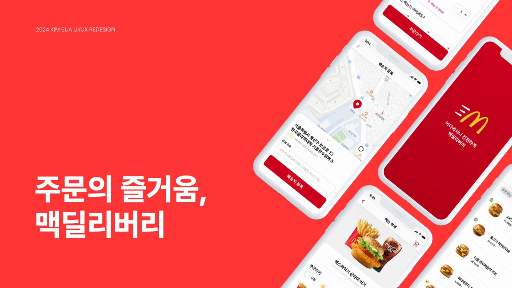
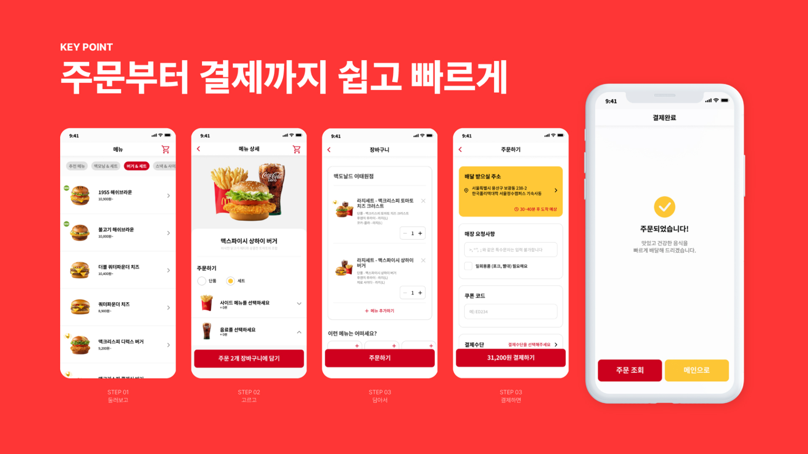

OVERVIEW
맥딜리버리는 맥도날드 사에서 서비스하는 어플리케이션으로, 맥도날드 햄버거를 집으로 배달 주문할 수 있도록 하는 브랜드 전용 배달 어플리케이션입니다. 음식 배달서비스의 연간 거래액은 나날이 증가하고 있는 추세로, 배달앱 시장이 크게 성장하고 있는 가운데 브랜드 전용 배달 앱의 중요성은 높아지고 있습니다.
그러나 기존 맥딜리버리 어플리케이션은 UI 디자인이 미흡하고 주문 절차가 복잡해 많은 사람들이 사용에 어려움을 겪고 있었습니다. 이에 사용자 리서치를 통해 문제점을 파악하고, 경쟁사 분석과 정보구조도 개편, UI/UX 리디자인 등을 통해 사용자들이 더 간편하고 쉽게 음식을 주문할 수 있도록 UI/UX 리디자인을 진행하였습니다.

